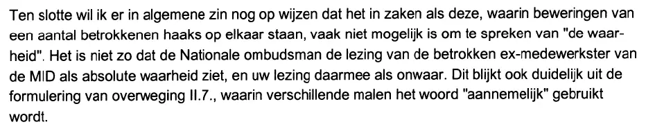

Bewijsstuk · Brief
Nationale ombudsman aan Giltay, 11 februari 2000
De passage
“Ten slotte wil ik er in algemene zin nog op wijzen dat het in zaken als deze, waarin beweringen van een aantal betrokkenen haaks op elkaar staan, vaak niet mogelijk is om te spreken van ‘de waarheid’. Het is niet zo dat de Nationale ombudsman de lezing van de betrokken ex-medewerkster van de MID als absolute waarheid ziet, en uw lezing daarmee als onwaar. Dit blijkt ook duidelijk uit de formulering van overweging II.7., waarin verschillende malen het woord ‘aannemelijk’ gebruikt wordt.” Pagina 2, de laatste inhoudelijke alinea van de brief. De brief zelf zet ‘de waarheid’ en ‘aannemelijk’ tussen rechte dubbele aanhalingstekens; ze staan hier als enkele omdat de hele passage al een citaat is.

Waarom dit document telt
In juni 2017 weigerde het Ministerie van Defensie de ministeriële gekverklaring uit 1999 in te trekken, en steunde het die weigering mede op het ombudsmanrapport uit datzelfde jaar. Deze brief, geschreven nog geen twee maanden na het verschijnen van dat rapport, laat zien dat de ombudsman zelf zijn bevindingen niet zag als een oordeel over wie de waarheid sprak. Hij wijst erop dat het vaak niet mogelijk is van ‘de waarheid’ te spreken als de beweringen van betrokkenen haaks op elkaar staan. De lezing van de oud-medewerkster ziet hij dus niet als absolute waarheid. Dat blijkt volgens hem ook uit overweging II.7 van zijn rapport, waarin verschillende malen het woord ‘aannemelijk’ staat. Die overweging betreft echter een geheel ander punt: of de MID belastende informatie over Giltay in de selectieprocedure had ingebracht. De kwalificatie van Giltay door de oud-medewerkster komt daarin niet aan de orde.
Herkomst
- Document
- Brief
- Van
- De Nationale ombudsman, Den Haag, ondertekend door R. Fernhout, Nationale ombudsman
- Aan
- E.F. Giltay, Scheveningen
- Datum
- 11 februari 2000
- Kenmerk
- 98.07789 035
- Onderwerp
- Commentaar op rapport
- Verwijzingen
- Giltays brief van 18 januari 2000 met het verzoek het rapport te herzien; het rapport van de Nationale ombudsman van 17 december 1999 naar aanleiding van Giltays klacht over twee onderdelen van het Ministerie van Defensie
- Behandeld door
- P.P.F. Schets
- Taal
- Nederlands
- Pagina’s
- 2
- Berust bij
- Archief van de auteur
- Zie ook
- Ministerie van Defensie aan Giltay, 6 juni 2017
Aangehaald in: het essay ‘Het verbod viel, het boek bleef overeind’ in het hoofdstuk (7) ‘Nooit een inhoudelijk antwoord’.
Bewijsstukpagina: https://
Document: https://
Laatst gewijzigd 13 september 2026, geraadpleegd 3 oktober 2026.

Deze pagina is een bewijsstuk bij het boek De doofpotgeneraal van Edwin Giltay en de bijbehorende website.